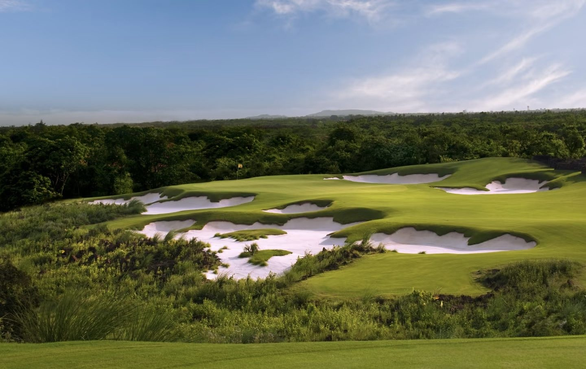
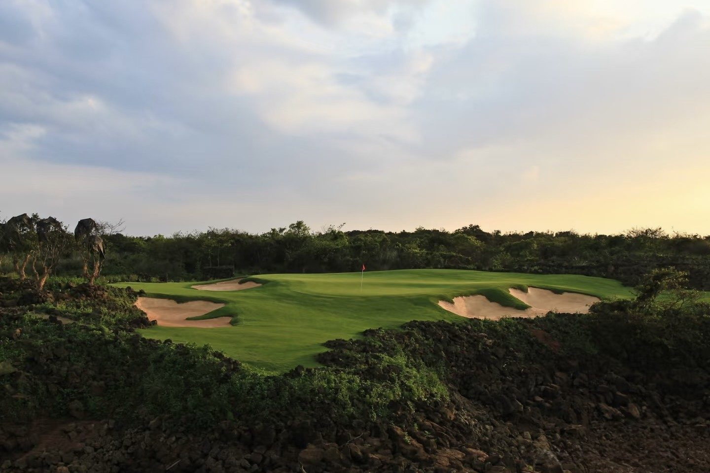
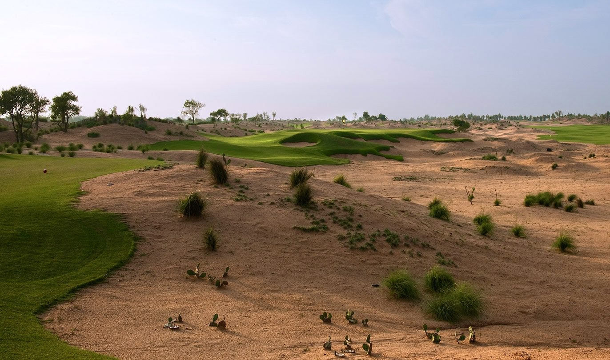
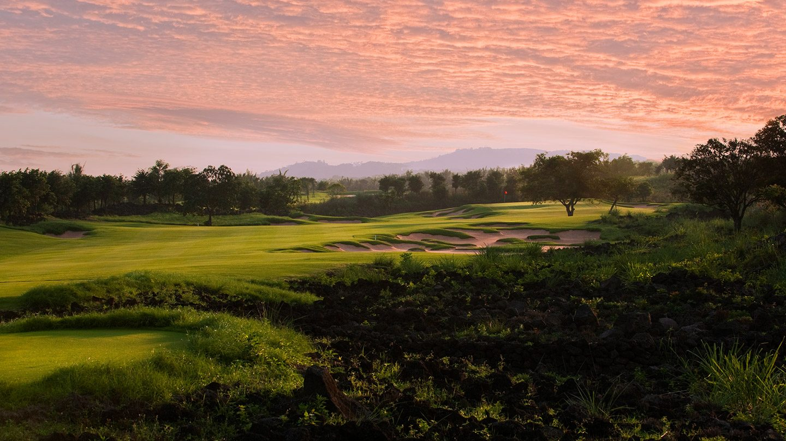
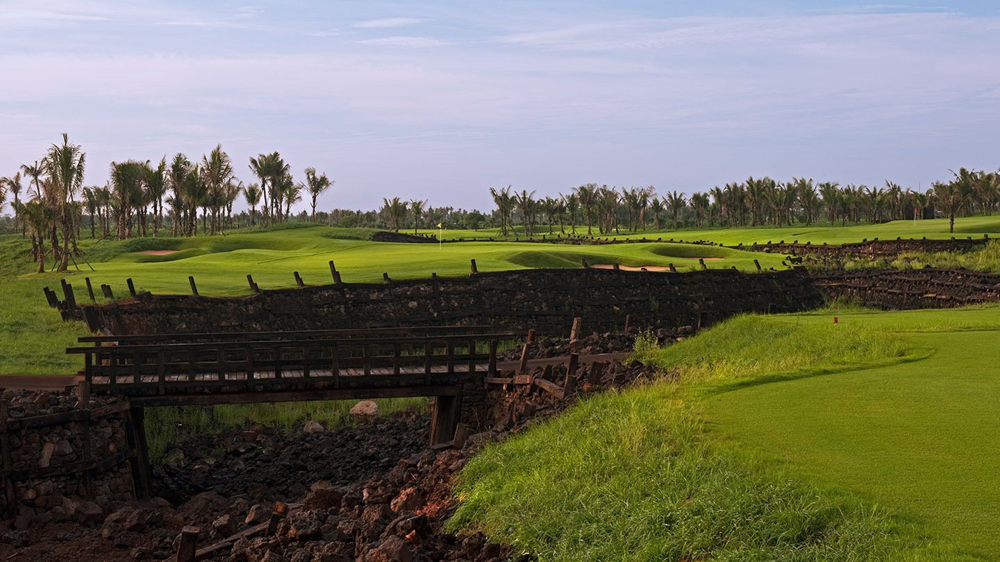

World Top 100Haikou · Hainan
Mission Hills Haikou — Blackstone
The headline course at the world's largest golf resort, Blackstone is carved straight through a field of black volcanic rock — fairways framed by jagged lava walls, white sand and tropical palm. Both Tiger Woods and Rory McIlroy have played here, meeting in The Match at Mission Hills on the Blackstone course; it holds a place in the World Top 100 and remains the course every visiting golfer wants to tick off. Floodlit play and natural hot springs at the door make it the easy, spectacular start to a Hainan trip.
- Designer
- Schmidt-Curley Design
- Setting
- Lava-rock tropical parkland
- Best season
- All year
- Pair with
- The Dunes, Shanqin Bay, the resort's hot springs